也紀念我們永遠的朋友 李士傑先生（Shih-Chieh Ilya Li）。
用自由軟體 Plone 來架設網站(8)－內容查詢
把內容資料儲存在系統之後，接下來的主要工作，就是依照顯示需求把它們找出來。常見的查詢條件範例，包括依照欄位屬性值查詢關鍵字詞、依照工作流程狀態篩選、依照日期屬性值排序、如果資料量龐大的話，還要考慮非同步索引，結合 AJAX 技巧，設計動態回應資料的方式，以改善系統的反應效能和操作性。
Plone 使用 ZODB 物件資料庫，屬於 NoSQL 世界的一份子，它的運作方式和傳統 SQL 資料庫不同，但透過 ZCatalog 的索引工具，ZODB 的搜尋結果可以視同 SQL 世界的表格資料，方便我們進行存取或排序的操作。本文將利用之前的 mysite.eventfolder 模組，還有新的 EEA Faceted Navigation 模組作為示範，介紹 Plone 內容查詢與顯示的技巧。
選項式欄位
之前練習建置 mysite.eventfolder 模組時，曾見過 StringField 和 DateTimeField 兩種欄位類型，而 DateTimeField 搭配的 CalendarWidget 就是一種選項式欄位，專門用來選擇日期時間的資料內容。如果要在 Archetypes 表單裡自訂選項，該完成哪些步驟呢?
首先，要決定欄位屬於單值或多值，也就是「單選」或「複選」。單值的情況比較單純，通常使用 StringField 加上 SelectionWidget 就行。以新增一個 Event Type 欄位為例，其程式碼範例如圖1 所示。
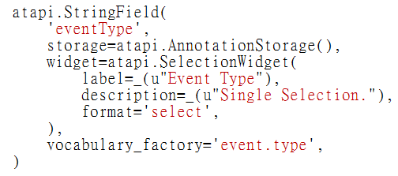
▲ 圖1 單選欄位的程式碼範例
比較特別的是 vocabulary_factory 設定項，我們指定 'event.type' 作為選項的參照名稱。慣例上，vocabulary 的參照內容定義在 content/vocabularies.zcml 和 content/vocabularies.py 兩個檔案裡，因此，我們在 content/configure.zcml 引入 vocabularies.zcml 檔案，如圖2 所示。
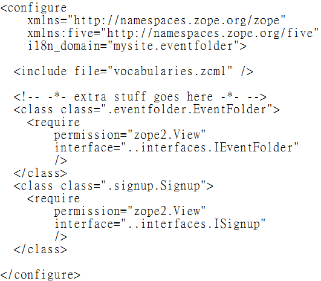
▲ 圖2 引入 vocabularies.zcml 的設定範例
建立詞彙表
上述 vocabulary 指的是詞彙表，也就是選項式欄位的候選內容。接著，我們要建立 vocabularies.zcml 的內容，目的是註冊詞彙表元件，如圖3 所示。
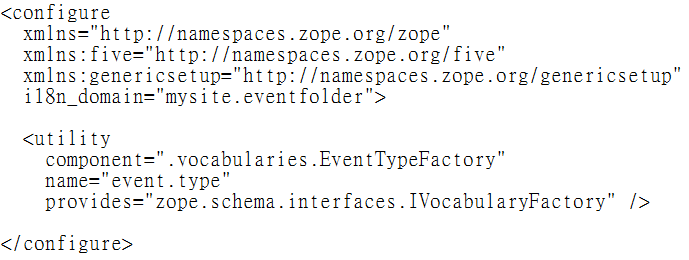
▲ 圖3 vocabularies.zcml 的範例內容
在 ZCA 元件架構裡，vocabulary 是一種 utiltiy 元件，我們日後再介紹這些進階元件的原理。不過，明顯地，範例裡註冊了一個名稱為 event.type 的元件，它的程式碼則要到同目錄裡的 vocabularies.py 檔案尋找，內容如圖4 所示。
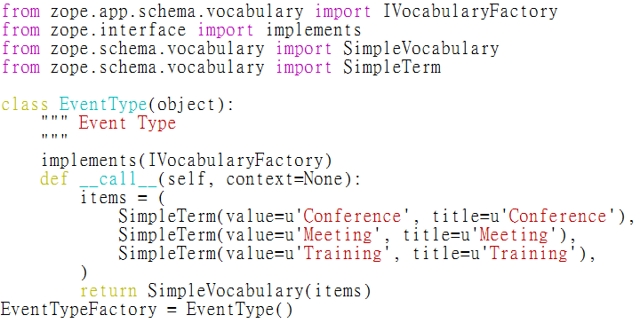
▲ 圖4 vocabularies.py 內容範例
EventType 類別 implement 介面 IVocabularyFactory，並主動回傳 items 詞彙表內容，例如：Conference、Meeting、Training 的選項值。
測試選項欄位及詞彙表
之前介紹過 buildout.cfg 檔案裡，指定 develop = src/mysite.eventfolder 的方式，除此之外，我們也可以在 develop.cfg 檔案指定開發中的程式碼。如圖5 所示。
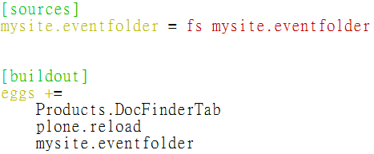
▲ 圖5 develop.cfg 設定範例
在 [sources] 裡指定的程式碼，等同於 develop = src/mysite.eventfolder 的結果，其中的 fs 設定值，代表在檔案系統的 src 目錄尋找原始碼，它也支援 svn 格式，用來直接存取放在 Subversion 的程式碼。
接著，執行 bin/buildout -c develop.cfg 讓設定值生效，它會安裝 plone.reload 之類的開發工具。觀察執行過程的訊息，也可以確認 mysite.eventfolder 順利被載入，如圖6 所示。
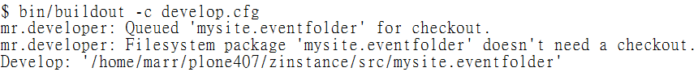
▲ 圖6 執行 buildout -c develop.cfg 訊息範例
一切順利的話，新的 Event Folder 表單的編輯內容如圖7 所示。
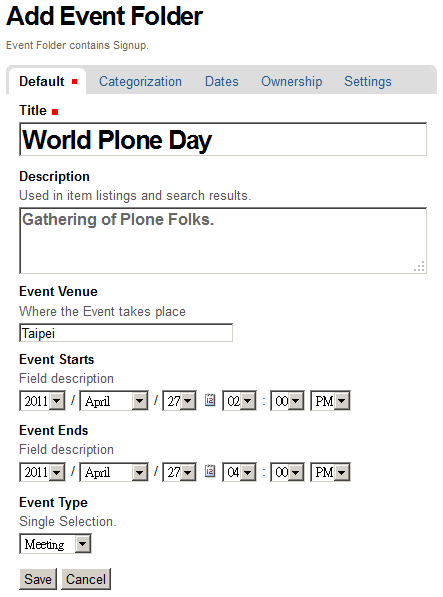
▲ 圖7 內含 Event Type 欄位的範例畫面
假設我們已經建立許多 Event Folder 內容，這時候就需要 EEA Faceted Navigation 模組上場了。
安裝導覽查詢模組
Plone 內建 Collection 工具，提供基本的查詢服務，原則上它是靜態的查詢結果，條件由管理員事先設定，因此，侷限使用者主動決定查詢條件的機會。
EEA Faceted Navigation 模組則提供更便利的導覽查詢功能，詳盡的設定介面，不但能讓管理員指定內容的搜尋條件，透過 AJAX 工具，還能即時反應查詢的結果，或是動態篩選查詢結果。它能完全取代 Collection 的功能，並可以整合其他多媒體模組的顯示功能。
安裝 EEA Faceted Navigation 方式很簡單，仿照上述步驟，繼續編輯 develop.cfg 內容，如圖8 所示。
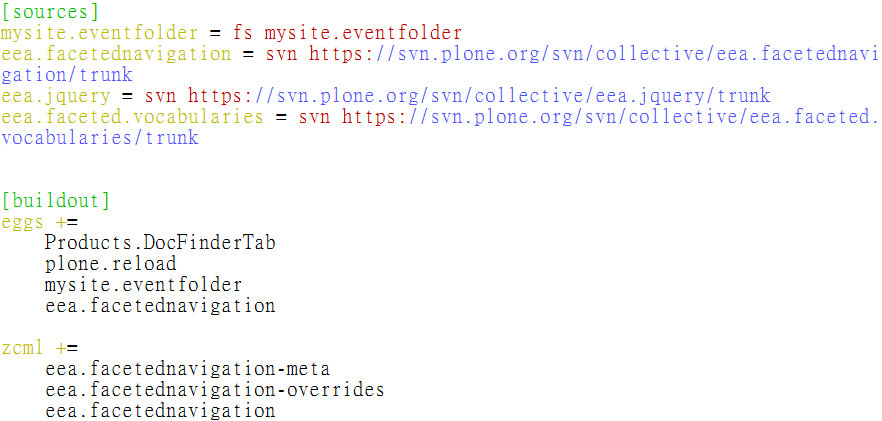
▲ 圖8 安裝 eea.facetednavigation 範例
和一般模組不同之處在於，eea.facetednavigation 要填寫三個 zcml 設定值。從執行 bin/buildout -c develop.cfg 的訊息，同樣能確認模組順利被載入，如圖9 所示。
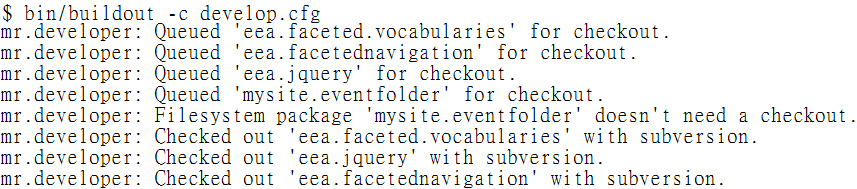
▲ 圖9 eea.facetednavigation 成功被 buildout 載入
EEA Faceted Navigation 模組需要搭配 jQuery 一併啟用，如圖10 所示。
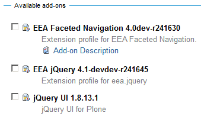
▲ 圖10 EEA Faceted Navigation 相關模組
啟用導覽查詢選項
想要啟用導覽查詢功能，必須先選擇一個用來顯示結果的目錄，以 /events 目錄為例，在 Actions 頁籤的下拉選單，可以看到新增一個 Enable faceted navigation 選項，點選它的話，就代表要啟用，同時也讓選項值變成 Disable faceted navigation。如圖11 所示。
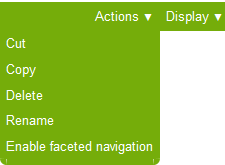
▲ 圖11 啟用 Faceted Navigation 的選項
順利啟用後，顯示類似圖12 所示的預設畫面。
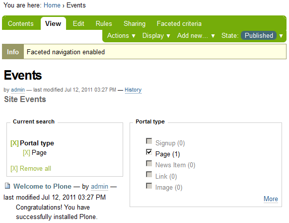
▲ 圖12 啟用 Faceted navigation 的預設畫面
點選 Faceted criteria 頁籤，會出現 Faceted Navigation 的設定畫面，分成 Basic 和 Extended 兩個顯示區域，每個顯示區域都以九宮格形式來區隔，每個方格區塊，都能新增數個 widget 項目。如圖13 所示。
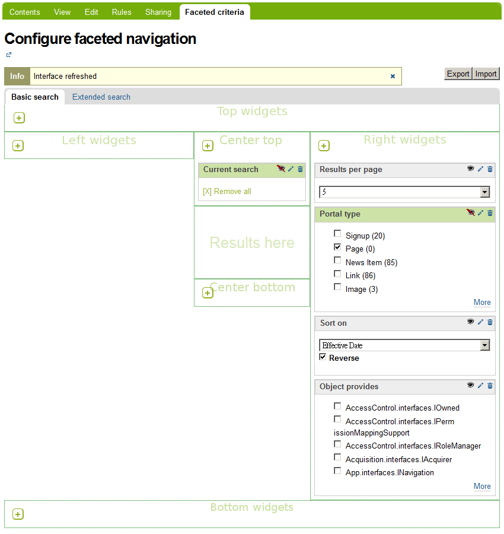
▲ 圖13 Faceted Navigation 設定畫面
所謂的 widget 是指管理搜尋條件或顯示結果的單位，慣例上，中間的方格區塊用來顯示搜尋結果，四周圍的方格區塊用來顯示搜尋條件。
右上方有 Export 和 Import 按鈕，可以匯出和匯入設定檔，它們以 XML 格式儲存。
設定導覽查詢選項
每個 widget 右上方，都有三個圖示，垃圾桶代表刪除，筆代表編輯，眼睛代表顯示或隱藏，如圖14 所示。
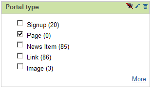
▲ 圖14 widget 的基本管理圖示
基本的設定項目，可以點選 widget 的筆按鈕，直接進入設定的管理介面，但是，想要存取詳盡設定項目的話，則必須點選左上方的 Disable AJAX 功能，進入表格式的管理介面，如圖15 所示。
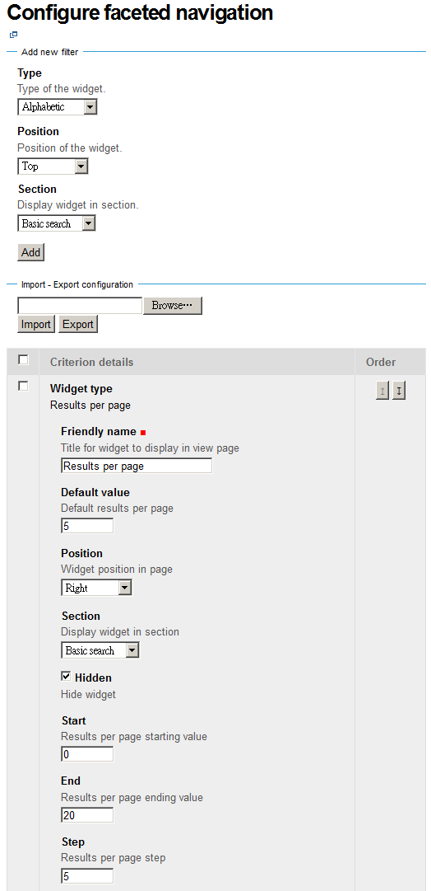
▲ 圖15
舉例來說，想要進入 /events 目錄後，顯示站內有哪些 Event 和 Event Folder 項目，方法是編輯 Portal Type 的預設值。不過，必須取消 AJAX 功能，進入表格式管理介面後，才能找到預設值欄位，如圖16 所示。
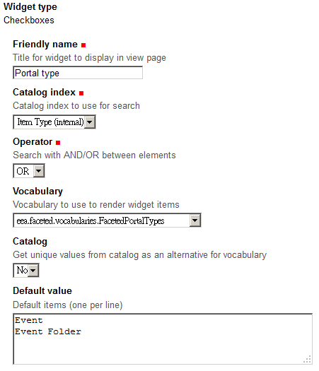
▲ 圖16 Portal Type 的預設值畫面
儲存按鈕位於管理介面的最下方，存檔後，回到目錄畫面，可以看到 Faceted Navigation 顯示效果，它只篩選 Event 和 Event Folder 兩種型別的內容，如圖17 所示。
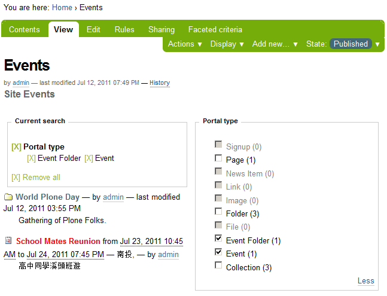
▲ 圖17 指定 Portal Type 的篩選結果
新增 ZCatalog 索引
假設系統已經新增數個 Event Folder 項目，分別屬於 Conference、Meeting、Training 不同類別，我們可以到 ZMI 先新增 ZCatalog 的索引，請到 /mysite/portal_catalog 點選 Indexes 頁籤，如圖18 所示。
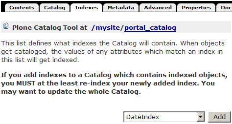
▲ 圖18 portal_catalog 的 Indexes 頁籤畫面
從新增索引的下拉選單，點選 FieldIndex，進入 FieldIndex 的設定畫面，如圖19 所示。
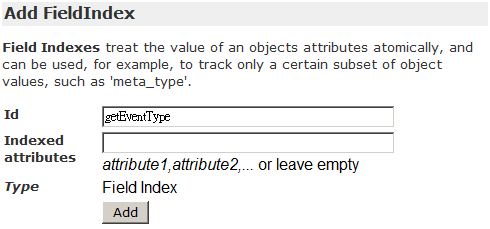
▲ 圖19 FieldIndex 設定畫面
我們要為 eventType 欄位進行索引，這個欄位預設有個 accessor 讀取工具，名稱就是 getEventType，因此，我們可以指定 FieldIndex 的識別碼為 getEventType。第一次新增索引後，要記得執行 Reindex 動作，勾選 getEventType 項目後，再點選 Reindex 按鈕，如圖20 所示。
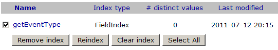
▲ 圖20 執行 getEventType 的 Reindex
完成索引動作後，進入 getEventType 項目，再點選 Browse 頁籤，可以看到索引的結果，如圖21 所示。
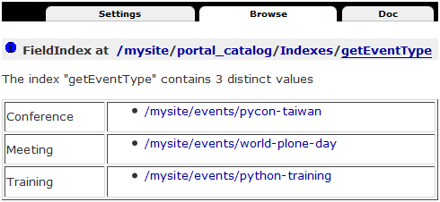
▲ 圖21 getEventType 的索引結果
新增導覽查詢選項
以新增一個 Checkbox widget 的查詢為例，新增畫面如圖22 所示。
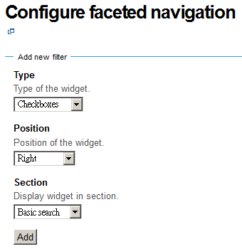
▲ 圖22 新增 Checkbox widget 的畫面
新增 widget 後，進入設定值的編輯畫面，Catalog index 欄位，要選擇在 portal_catalog 裡新增的 getEventType 項目，Vocabulary 欄位要選擇 event.type 項目，這是我們在 mysite.eventfolder/content/vocabularies.zcml 註冊的詞彙表名稱，如圖23 所示。
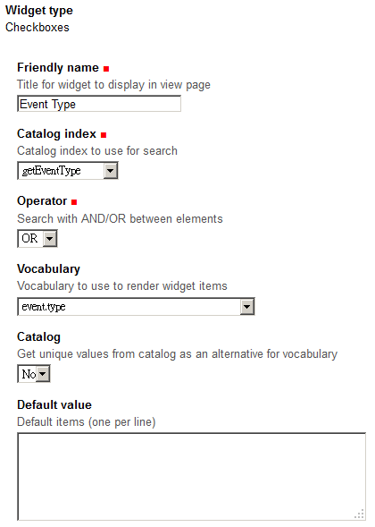
▲ 圖23 設定 Checkbox widget 的畫面
完成 widget 新增，回到目錄畫面，可以看到 Faceted Navigation 新的顯示結果，各別勾選 Event Type 選項的話，可以篩選各別的內容項目，如圖24 所示。
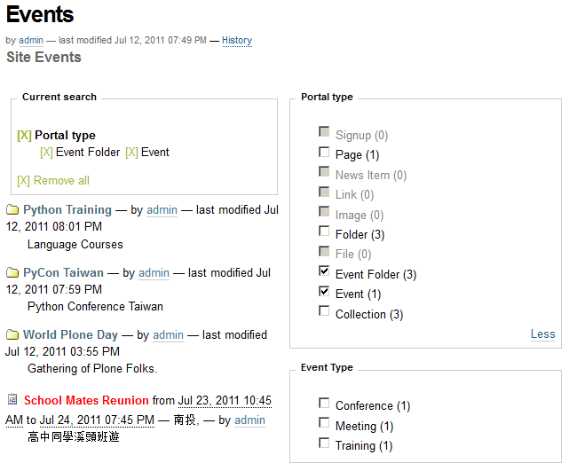
▲ 圖24 Event Type 的 Faceted Navigation 畫面
結論
ZCatalog 不僅可以索引內容，也可以設定排序方式，顯示資料時，它配合 metadata 工具提供預先儲存的內容，不會造成系統資料庫的負擔。不過，一旦索引發生錯誤，系統不但運作不正常，大量資料進行重新索引時，免不了要花費許多力氣。通常，進行系統資料移植或升級時，必須執行重新索引，以確保系統資料正常無誤。
另一方面，我們也練習 EEA Faceted Navigation 模組的操作，許多設定細節，暫時留給讀者自行嘗試，雖然只是牛刀一試，相信足夠觸發許多面向的應用可能，例如 EEA 網站就搭配多媒體顯示模組，將多媒體內容的搜尋結果，直接結合 AJAX 和 FLASH 加以顯示，提昇操作便利性。更多新功能，期待下回繼續探索囉。
You may be interested in the following articles:
- 用自由軟體 Plone 來架設網站(10)－連接資料庫 - 2011-08-05
- 用自由軟體 Plone 來架設網站(9)－多媒體結合 - 2011-07-25
- 用自由軟體 Plone 來架設網站(7)－版型調整 - 2011-06-28
- 用自由軟體 Plone 來架設網站 (6)－動態網頁 - 2011-06-09
- 用自由軟體 Plone 來架設網站 (5)－元件架構 - 2011-05-20
- 用自由軟體 Plone 來架設網站 (4)－建立專案 - 2011-05-04
- 用自由軟體 Plone 來架設網站 (3)— 內部設定 - 2011-04-25
- 用自由軟體 Plone 來架設網站 (2)— 內容管理 - 2011-04-11
- 用自由軟體 Plone 來架設網站 (1)— 基礎安裝 - 2011-03-21
Special


Address：No.128, Sec.2, Academia Rd., Institute of Information Science, Academia Sinica, Nangang District, Taipei City 11529, Taiwan (R.O.C).
Privacy Policy. Terms-of-use